How to Remove a JustWare install, the files associated with it, and the database
Note: Any services (Mobile, the API, JusticeWeb, etc.) that are installed against an install that you would like to remove should be removed prior to removing JustWare.
On the web server, launch the JustWare Maintance Console (JWMC)
Open the Web Server Install Tab
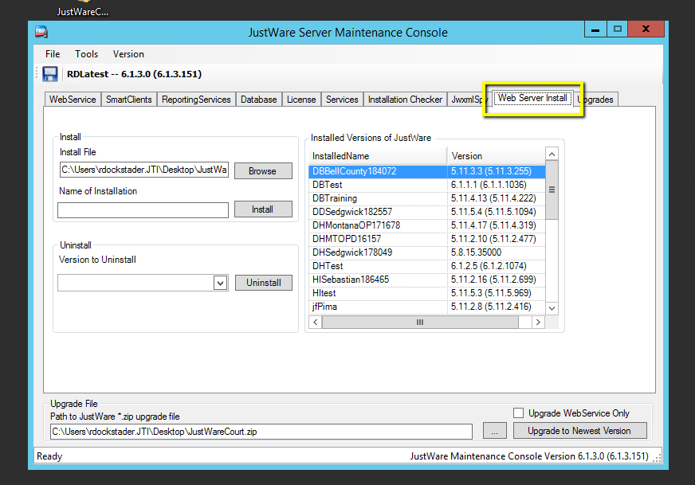In the Uninstall section, use the drop down to select the version you'd like to remove
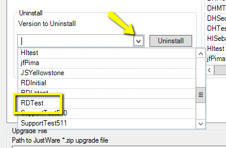Click the Uninstall button
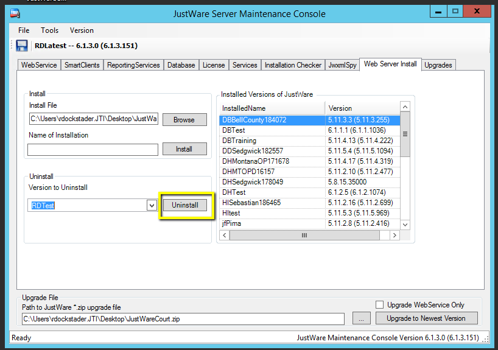Select yes to delete all reports (if you need to keep any reports leave this prompt open and download those reports to your machine)
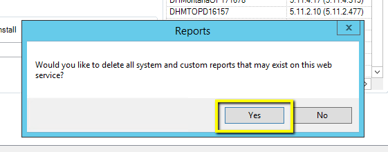Hit OK
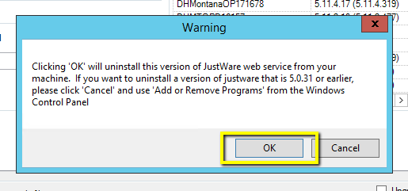Wait for the uninstall to complete
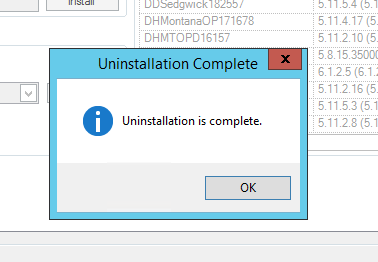Open File Explorer
Navigate to the install folder (should contain docTemp, workflowTemp, and filingCabinet) and delete the entire folder
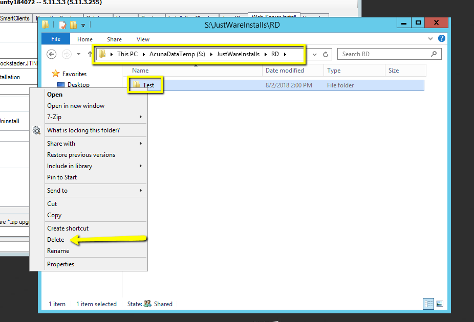Launch SQL Server Management Studio (SSMS)
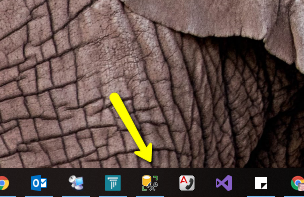Connect to the SQL Server (Zombie or Zeppelin)
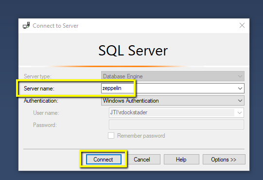Right click on your database, and select delete
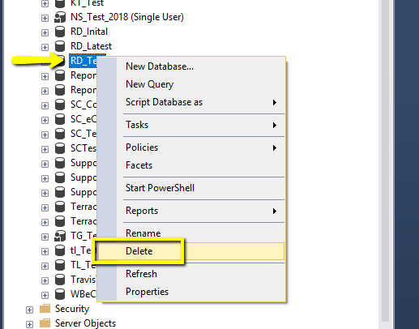Check the box to close existing connections
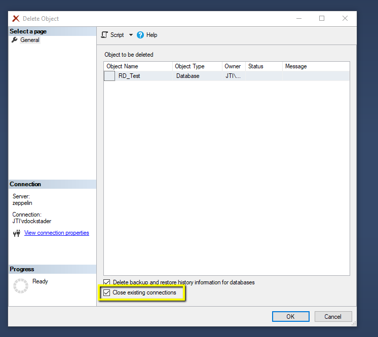Hit Okay
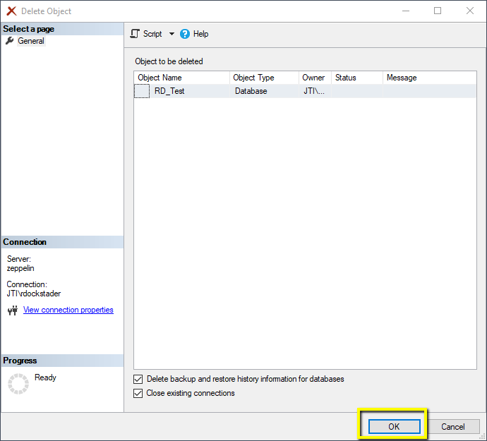Once the Database is deleted, your JustWare install should be completely removed